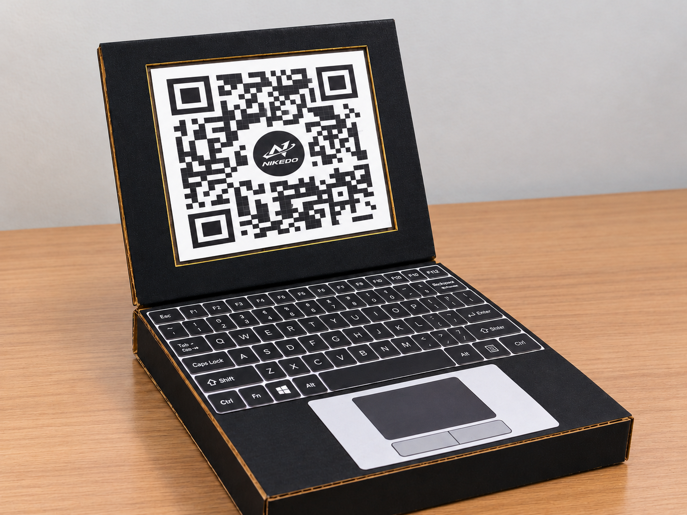
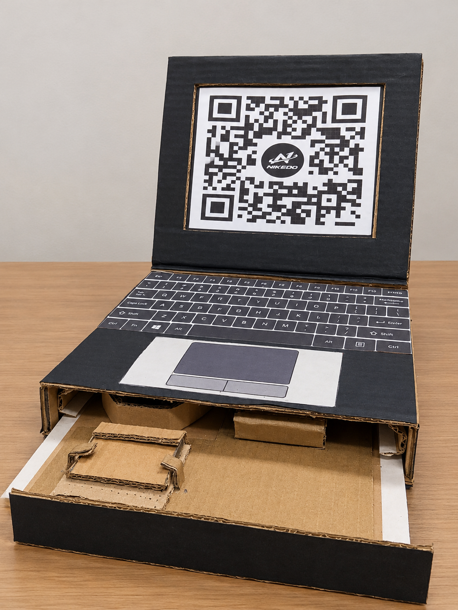
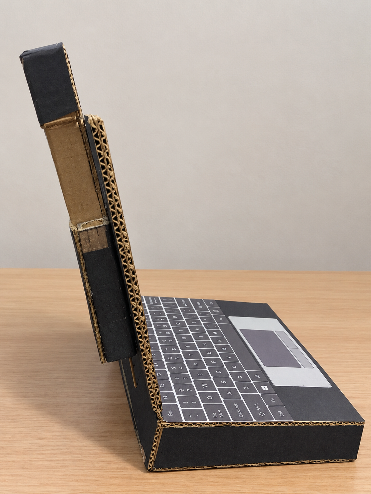

Side Button
A button positioned on the side is intended to start the laptop's proposed opening process.
Design • Creativity • Technology
NIKEDO is our DIY laptop concept developed for our Media Technology project. It explores how a laptop could combine convenient opening and closing, a pop-up camera, user detection, and cooling in one design.
Explore Our Prototype ↓
Our project focuses on creating a handmade laptop
prototype that presents ideas for the future of
personal computing. We used simple materials to
represent the laptop's body and arranged its visible
details to show how a more convenient design might
look. The concept also includes ideas for an
opening mechanism, a pop-up camera, user detection,
and an internal cooling setup.
Through this project, we learned how planning,
creativity, teamwork, and practical construction
can turn an idea into a physical model.
DIY laptop innovation prototype
Explore a more convenient laptop design
Handmade structure with proposed smart features
The following features describe the functions we want the NIKEDO concept to have. Their actual operation depends on the mechanisms and components installed and tested in the prototype.
A button positioned on the side is intended to start the laptop's proposed opening process.
The design explores a mechanism that could open the laptop with less manual effort.
A camera mechanism is planned to rise from the laptop body as part of the proposed design.
A detection system is intended to check whether the user is still in front of the laptop.
The concept proposes closing the laptop after a set waiting period if no user is detected.
A cooling fan is included in the internal setup to represent heat management in a laptop.
Prototype note: These descriptions explain the intended design. Only features that have been physically demonstrated and tested should be described as fully functional.
This sequence explains the planned operation of the NIKEDO laptop concept. It is a design description, not a claim that every automatic function is already working in the physical prototype.
The user presses the side button to initiate the proposed opening mechanism.
The planned detection system checks whether someone remains in front of the laptop.
If the user is no longer detected after the intended waiting period, the system would begin the proposed closing sequence. The pop-up camera is another design feature intended to work with the mechanism.
The intended final step is to close the laptop when the user has not returned. The timing and moving parts would need to be tested for safe and reliable operation.
The prototype uses simple materials to represent the laptop body and its details. Review this list and keep only the items that your group actually used.
Handle cutters and hot glue guns carefully. Ask a teacher or adult for supervision when needed.
These photographs show our actual handmade laptop, highlighting its front design, side structure, and lower construction.



Image reminder: Upload prototype1.png, prototype2.png, and prototype3.png to the same GitHub repository location as this HTML file. The filenames must match exactly, including uppercase and lowercase letters.
The proposed design explores how automatic opening and closing could make laptop use more convenient. User detection could support the closing process, while the pop-up camera gives the concept a distinctive feature. The cooling fan represents the importance of managing heat in a computer.
Future development could focus on testing the opening and closing mechanism, improving user detection, checking the camera movement, and evaluating the cooling setup. We could also improve the laptop's outer finish and test the moving parts for safety and reliability.
Creating NIKEDO helped us explore how a technology idea can be represented through a physical model. It gave our group an opportunity to apply creativity, organize materials, and think about how different laptop features might work together. Although the concept still has room for development and testing, the prototype gives us a starting point for future improvements.